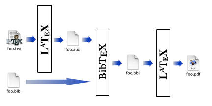
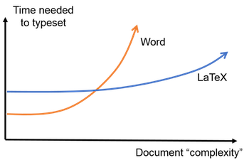

Virtual Machine - How To
Install VirtualBox on your system (if you have not done so before); the link for the virtual machine is provided here. Log in as the user feeg6003 using the same password.
In the virtual machine a basic LaTeX distribution has been installed, together with BibTeX, TeXstudio and also Mendeley.
Introduction to LaTeX
LaTeX (spelled /ˈlatek/) is a typesetting system that produces professionally scientific and mathematical documents with high typographical quality, nevertheless it is also suitable for producing all sorts of other documents, from simple letters to complete books. LaTeX uses TeX as its formatting engine.
It is particularly useful for:
- Easily creating large documents keeping format and high typographical quality (thesis, PFC, etc.);
- Clearly separating the content from the format of your document;
- Easy writing complex maths;
- Creating professional presentations.
So why should we use LaTeX instead of traditional text processors? There is a large number of advantages, such as:
- Beautiful mathematical expressions;
- Easy generation of indices, such as table of contents, bibliography etc.
- Allowing to focus on the text content rather than its appearance: LaTeX is going to do the job!
- Availability of professional templates;
- Free software;
- Standard language.

It takes some effort at the beginning to learn the commands and understand how everything works, but after that (and lots of compiling errors!) you're going to be highly satisfied.
To get started you will need at least the following:
- Text editor (Gedit, GVim, Sublime or an IDE);
- TeX distribution (TeXLive, MiKTeX, MacTeX ...);
- Output viewers for different formats (.dvi, .ps, .pdf).
If you're using Windows you can simply download everything directly as .exe files, if you're using a Linux machine you can type on the command line:
sudo apt-get install texlive-full
if you want a full LaTeX distribution (highly recommended). Otherwise you can type:
sudo apt-get texlive-latex-base
This will download only the essential packages.
Writing with LaTeX
Document structure
LaTeX practically forces you to declare structure within your documents: commands are usually prefixed with a backslash, \. Some commands have different options that you can specify when you type the command (these options are called "arguments"). The optional arguments (things you can choose to tell the command) usually go inside square brackets, and mandatory arguments (things you have to tell the command) usually go inside curly braces. A generic command would look like:
\command[option]{argument}
Every LaTeX document starts by defining what kind of document this is going to be (standard classes being article, report, book and letter), and this section of the document is called the preamble. We do this by:
\documentclass[option]{argument}
The document environment
The \begin{document}...\end{document} LaTeX commands are an example of an environment. Environments are always entered with a \begin{} command and exited via a \end{} command. They define particular typesetting features so that you can set out different parts of your document in different ways, according to its content and purpose. The main document starts with \begin{document} and ends with \end{document}.
An environment is always defined by:
\begin{environment_name}[options]
commands
\end{environment_name}.
Title
In LaTeX we can define the title and the authors of the document and this can be done in the preamble. Note that authors should be separated by the command \and. Command \date is used to replace or omit the current date, which LaTeX puts in the document by default. Command \maketitle, that has to be inserted inside the document environment, creates the title of the document based on the title, authors, and the date defined earlier.
\title{...}
\author{...}
\date{...}
\maketitle
Sections and hierarchy
We can define the division of the document into chapters, sections, and subsections. Of course, certain commands are appropriate to different document classes. Notice that you do not need to specify section numbers, LaTeX will do the job! Also, for sections, you do not need to markup which content belongs to a given block, using \begin and \end commands, for example:
\part{part}
\chapter{chapter}
\section{section}
\subsection{subsection}
\subsubsection{subsubsection}
\paragraph{paragraph}
\subparagraph{subparagraph}
Contents and indices
A table of contents is produced with the \tableofcontents command. It's possible to put the command right where you want the table of contents to go, as long as it is inside the document environment. There are similar commands like \listoffigures and \listoftables for producing a list of figures and a list of tables, respectively.
Mathematics
In LaTeX it is straightforward to include mathematical equations and notation in your document. To write a mathematical symbol or formula anywhere in the text of the document surround it with $ (dollar) characters. To write a formula in a separate line, put it in the equation environment, like shown in the example below:
\begin{equation}
\frac{\partial^2 \theta}{\partial s^2} = s f_g\cos(\theta) + sf_x\cos(\phi)\sin(\theta).
\end{equation}
Tables
A table is a rectangular array of cells, arranged in rows and columns, and the relevant LaTeX environment is the tabular environment. It's recommended to nest this inside a table environment, which will make sure tables are floated to the top (or bottom) of a page, however this is not strictly necessary.
\begin{table}
\caption{Largest cities in the world (source: Wikipedia)}
\begin{tabular}{lr}
City & Population \\ \hline \hline
Mexico City & 20,116,842\\
Shanghai & 19,210,000\\
Peking & 15,796,450\\
Istanbul & 14,160,467\\
\end{tabular}
\end{table}
The figure environment
Dealing with figures in LaTeX is quite tricky, especially because by default LaTeX will insert them where there is enough blank space available in the document. There are some commands to force a figure in a particular position, but usually it's always better to stick with LaTeX default settings.
The basic syntax to put figures is:
\begin{figure}[h]
\includegraphics[options]{filename}
\end{figure}
Bibliography in LaTeX
Being able to manage the list of references that have been used when writing an article (or a book, for example) is a tedious but nevertheless essential task; fortunately LaTeX provides some useful tools that can be of help.
Standard Bibliography Environment
To manage the bibliography LaTeX provides a basic environment called, not so surprisingly, thebibliography; it can be useful when the number of references is not so high or maybe when we are writing a document on a topic that we do not treat frequently. Here is a very simple example:
\begin{thebibliography}{9}
\bibitem{adams79}
Douglas Adams,
\emph{The Hitchhiker's Guide to the Galaxy}.
Pan Books,
1979.
\end{thebibliography}
First of all it's worth ponting out that everything that is related to the bibliography goes within that environment. Secondly the number provided after the begin statement tells LaTeX how wide has to be the item label when creating a file; it actually doesn't matter the number itself, but instead the number of digits: for example in this case the number is '9', which means that the reference label is going to be only of one character in length. If we are planning to use more than nine references (until 99) then we can use any two-digits number, for example '23'.
This environment is basically a list structure, such as itemize or enumerate and each entry has to be inserted after the command \bibitem{cite_key}, where the cite_key is a unique identifier for a certain reference. A part from this, everything that is inserted on each entry does not need to have a particular style: in this case the title of the book is in italics, but it could have been in bold letters or underlined. We also have total freedom also on which fields to insert (author, publisher, year...): in other words we need to specify the format of each element and it doesn't have to be uniform.
In order to cite a reference in the document it's enough to type \cite{cite_key} when we want that particular citation to appear, as can be seen in the example below:
This book\cite{adams79} is amazing!
LaTeX allows for multiple references, just need to separate them with a comma. It is also possible to cite a particular page of a reference: to do that just type something like this \cite[p. ~45]{cite_key} (remember, what goes within square brackets is an argument to that command).
BibTeX
BibTeX can be seen as a general database manager: it takes some items from the database and exports them in a "LaTeXable" thebibliography environment. It's particularly useful when the number of references is high and when we want to use them (or some of them) in more than one article. With BibTeX:
- References are stored in a plain text database with a simple format; the file must be given the extension .bib.
- Most of the work involved in managing references for use in LaTeX files is automated: we need to type each reference only once.
- Citations and reference list are automatically formatted consistently, in a chosen style.
How Does It Work?
In order to include the bibliography in your document you just need to specify the database (the .bib file) and the style to be used (the .bst file); to do this you just need to include in your document:
\bibliography{filename.bib}
\bibliographystyle{style.bst}
You don't need to include the file extensions, the file names are enough.
Now if we want to create our document the general workflow is (if executed on the command line):
pdflatex filename
bibtex filename
pdflatex filename
pdflatex filename
First you need to compile your document with (PDF)LaTeX: this creates the file without any bibliographic information and references, but the key of each reference is written in the .aux file together with the bibliography database and the style to be used.
Now you can run BibTeX: it reads the .aux file that contains, as written before, the style to be used and the database and it produces a .bbl file with all the extracted cited references.
Finally you need to rerun (PDF)LaTeX two times: the first one allows the bibliographic references to be written in the .aux file and the second one allows LaTeX to include the bibliographic citations in the document.
If using an IDE such as TeXstudio or TeXmaker you may not need to execute all those commands.
The bib file
The structure of a database file is very simple, as shown in the example below:
@book{adams79,
author = "Douglas Adams",
title = "The {H}itchhiker's {G}uide to the {G}alaxy",
year = 1979,
publisher ="Pan Books",
}
Let's see in more detail how each entry has to be structured.
We first need to define a reference type and this is done using the @ symbol followed by the type that we need; there is a huge number of types available, but amongst the most used there are:
- article: an article from a journal or magazine.
- book: a book with an explicit publisher.
- booklet: a printed work, but without a named publisher.
- conference: a conference article.
- phdthesis: a PhD thesis.
- manual: a technical documentation.
- misc: use this when nothing else seems appropriate.
Once defined an entry type we need to put all the required fields between curly braces; each field should have this format:
@entry{cite_key,
field_1 = "value_1",
field_2 = "value_2",
...
field_9 = "value_9",
}
First you have to declare the field and then you insert its value between double quotes (or curly braces); spaces and line breaks are not important, these are needed just to make the code easier to read, but commas are compulsory. The cite_key goes right after the curly braces and without double quotes.
Regarding the fields, there are many of them, such as author, title, year, journal... each entry type has some mandatory fields that have to be included while others are optional. As for the structure of the fields, here are just two example: the title field and the author field.
The title field
One has to be careful when dealing with the title: for example when we create the reference list BibTeX will turn everything but the first letter of the title field lowercase. In order to avoid this problem you can enclose the letter that you want uppercase between curly braces, as shown in the first example of how to structure a bib file.
The author field
When writing the name of an author BibTeX recognizes three different formats; let's say the first name is First, the surname is Last and the von part is von, you can then type the author name as:
- First von Last;
- von Last, First;
- von Last, Jr, First.
If you have more than one author you can separate them with and, while if you have a high number of contributors you can simply type and others to produce the output et al.
Some tricks: strings and cross-references
It is possible to define strings inside the bib file: it can be helpful when one has to include the same authors or the same publisher/journal in many entries. A string can be define like this:
@string{PB = "Pan Books"}
@string{adams = "Douglas Adams"}
Now you can use that string just defined to build your references. For example:
@book{adams79,
author = adams,
title = "The {H}itchhiker's {G}uide to the {G}alaxy",
year = 1979,
publisher = PB
}
This will produce the same output as the previous case. Note that when filling a field with a string we don't need to use double quotes, because we have already used them when we defined that string.
Another useful feature of BibTeX is the possibility of cross-referencing: suppose we want to cite a chapter (or a part) of a book or an article in conference proceedings, for example chapter 13 of the LaTeX Companion:
@book{companion,
author = "Goossens, Michel and Mittelbach, Franck and Samarin, Alexander",
title = "The \LaTeX\ {C}ompanion",
booktitle = "The \LaTeX {C}ompanion",
year = 1993,
publisher = "Addison-Wesley",
month = "December",
}
@incollection{companion-bib,
crossref = "companion",
title = "Bibliography Generation",
chapter = 13,
pages = "371-420",
}
As shown in the example above we need to add the field booktitle in the main reference and then use the incollection entry type to build the cross-reference; usually this will need at least the title of the chapter/section and of course the crossref field that has to point to the main document.
Styles and the bst file
A style, in simple words, is the way that the bibliography entries are formatted when producing a document; this includes also the way they are sorted and how they are cited throughout the document. All the information that BibTeX needs are contained in a .bst file, for example:
- Which entry types are defined;
- Which fields are mandatory or optional;
- And how to produce a clean and LaTeXable bibliography.
There are four basic styles included in the standard BibTeX:
- plain: entries are sorted alphabetically and labelled with numbers;
- alpha: entry labels are sorted alphanumerically and labelled with authors' names and year of publication;
- unsrt: like plain, but entries are sorted by the order of their first citation;
- abbrv: like plain, but entries are written in a more compact form.
There are many other styles available, in order to use them you just need to load additional packages, such as natbib: with this loaded you can have access to lots of different styles plus the classical ones redefined especially for natbib (plainnat, unsrtnat, abbrvnat*) with other features, like for example the possibility to include an URL as a field within an entry. The \cite command has also been redefined, so that you can handle citations styles in different ways, for example changing the brackets, or making them superscript.
As mentioned before, the bst file is the one responsible for building the reference list. Let's have a (brief) look at how it's structured:
ENTRY
{ ... }
{ ... }
{ ... }
INTEGERS { ... }
STRINGS { ... }
MACRO { ... }{ ... }
FUNCTION { ... }{ ... }
READ
EXECUTE { ... }
ITERATE { ... }
SORT
ITERATE { ... }
REVERSE { ... }
EXECUTE { ... }
As you can see each command is written in uppercase and its argument is between curly braces. Following there is a very brief explanation of what those commands do:
- ENTRY: Defines a list of all possible fields (address, author, title...);
- INTEGERS: Declares integer variables;
- STRINGS: Defines string variables (not to be confused with the @string mentioned before) in the same way as INTEGERS;
- MACRO: Defines abbreviations and takes two arguments; the first one is the name of the abbreviation while the second is the definition itself (this is similar to @string);
- FUNCTION: Defines macro functions that will be exectuted later on;
- READ: Tells BibTeX to read the .bib file (must occur only one time);
- EXECUTE: Executes the function that has been given as an argument;
- ITERATE: Similar to EXECUTE, but the function is executed as many times as the number of entries imported by READ;
- SORT: Sorts the entries according to the style;
- REVERSE: Like ITERATE, but the functions are executed from the last entries to the first ones.
Usually it's better not to modify the bst file, unless you really need to; if you're looking for a particular format there are hundreds of styles that can be downloaded (for example lots of journals have made their citation styles available for download). If you want to create a style file from scratch an useful tool could be custom-bib; you just need to type from the command line:
This will start a Q&A session in which you'll be required to answer some easy questions about the structure of the file that you want to create. In the end a bst file will be produced.
References and useful links
Exercise
The exercise consists of two parts: in the first one you'll be required to reproduce the document as best as you can, while in the second part you'll be required to deal with the bibliography using BibTeX.
Exercise